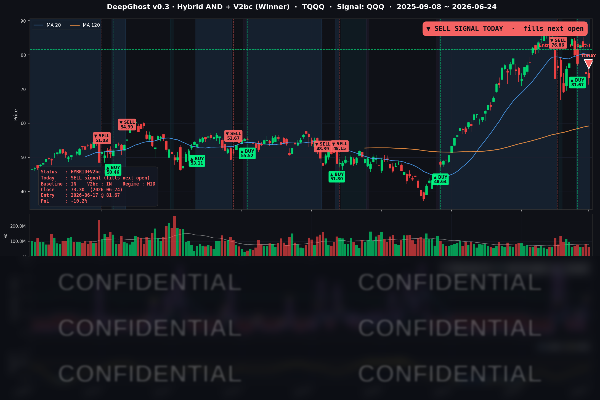

매파 연준 여진과 빅테크 약세 속에 매도 신호가 나왔습니다. 모델 시그널의 Confidence는 매우 낮았습니다. 즉, AI도 긴가민가하는 중입니다. 룰은 룰이니 오늘 시장 시초가에 매도합니다.
마이크론 실적이 잘 나와서 장 마감후 선물은 급등하고 있습니다. 조금 오른 가격에 팔 수 있겠습니다. 이번 보유기간 최종 손익은 오늘 장시초가 기준으로 결정되겠습니다.
📊 오늘의 매매 신호
| 항목 | 내용 |
|---|---|
| 오늘 할 일 | 🔴 TQQQ 전량 매도 — 오늘 저녁 미국 장 개장 후 (한국시간 오후 10:30~) |
| 포지션 상태 | 매도 신호 발생 |
| 보유 기간 | 2026-06-17 ~ 2026-06-24 (7일) |
| 이번 거래 수익 | -10.2% |
이번 거래는 손실권에서의 청산입니다. 모델은 감정 없이 정해진 규칙에 따라 위험을 줄입니다. "공포에 던졌다"가 아니라 "규칙대로 노출을 줄였다"가 정확한 표현입니다.
25일 장 시작가에 매도하면 최종 수익이 결정됩니다. 횡보장이 이어지고 있습니다. 확실한 추세가 나오면 다시 매수 시그널이 나올 것입니다.
TQQQ 시그널 — OUT OF POSITION
현재 상태: 청산(매도) 신호 발생 → 6/25 미국 장 개장가에 정리 예정 | 이번 거래 -10.2%

지난 6/17에 진입했던 TQQQ가 7거래일 만에 청산 신호를 맞았습니다. 6/23 반도체 급락으로 보유분이 손실로 돌아선 데 이어, 6/24에는 모델이 청산 조건을 충족하면서 매도 신호가 나왔습니다. 실제 매도는 다음 거래일(6/25) 미국 장 개장가에 체결됩니다.
여기서 한 가지 짚어둘 점이 있습니다. 6/24 당일 미국 시장은 오히려 진정 국면이었습니다(나스닥 -0.43%로 낙폭 축소, VIX는 18.63으로 안정). 즉 추가 폭락이 청산을 부른 것이 아니라, 앞선 하락으로 시장 흐름이 이미 꺾인 뒤 모델이 위험을 거둬들이는 판단을 내린 것입니다. Ghost.AI의 청산 엔진은 본질적으로 "큰 충격에서 노출을 빠르게 줄여 손실 폭을 방어"하는 데 강점이 있습니다. 이번처럼 진입 직후 단기 역풍을 맞으면 회피보다 손절로 귀결될 수 있지만, 손실권에서도 기계적으로 위험을 정리하는 일관성이 이 전략의 핵심입니다.
※ 참고로 같은 6/17 묶음으로 진입한 다른 지수형 포지션은 상대적으로 덜 빠져 청산 조건에 닿지 않았습니다. 지수마다 신호가 다르게 작동한다는 점을 보여주는 사례입니다. (본 포스트의 시그널 안내는 TQQQ를 기준으로 합니다.)
오늘 미국 시장 — 시황 요약
지수 마감
| 지수 | 종가 | 등락률 |
|---|---|---|
| S&P 500 | 7,358.22 | -0.10% |
| 나스닥 종합 | 25,476.63 | -0.43% |
| 다우 존스 | 51,848.90 | +0.35% |
| 러셀 2000 | 2,986.63 | +0.37% |
대형 기술주는 밀리고, 가치·중소형주는 오르는 전형적인 자금 이동(로테이션) 장이었습니다. 나스닥과 TQQQ(나스닥 3배)는 약세였던 반면, 다우와 러셀 2000은 플러스로 마감했습니다. 지수 비중이 큰 빅테크가 약했던 탓에 S&P 500은 보합으로 눌렸습니다.
국채 금리 동향
| 만기 | 수익률 | 전일 대비 |
|---|---|---|
| 3개월 | 3.690% | +3.2bp |
| 5년 | 4.176% | -4.9bp |
| 10년 | 4.402% | -4.9bp |
| 30년 | 4.856% | -4.5bp |
단기 금리는 오르고(매파 연준 반영, 인상 베팅), 중장기 금리는 내린 모습입니다. 보통 장기 금리 하락은 위험자산에 우호적이지만, 이번엔 "경기 둔화 우려"발 하락 성격이 강해 빅테크 밸류에이션을 떠받치기보다는 금리에 민감한 가치주(주택건설·산업재)로 자금이 옮겨가는 흐름으로 나타났습니다. 장단기 금리 역전은 없는 정상 곡선입니다(10년-3개월 +71bp).
연준 발언 & 금리 패스
6/24 당일 개별 위원 연설보다는 6/16~17 FOMC 결정의 여진이 시장을 지배했습니다. 핵심은 ▲정책금리 3.50~3.75% 동결 ▲점도표에서 연내 인하 전망 삭제, 다수 위원이 연내 1~2회 인상 가능성 시사 ▲2026년 물가 전망 상향(헤드라인 3.6%, 코어 3.3%)입니다. 시장은 10월 인상 가능성을 가격에 반영하기 시작했습니다. "인하 사이클" 기대가 사실상 접히고 "동결~인상" 국면으로 넘어가면서, 밸류에이션이 높은 성장주에는 부담이 커진 환경입니다.
오늘의 핵심 이슈
- 매파 연준 여진과 빅테크 로테이션. 연내 인하 삭제·인상 시사가 계속 부담으로 작용하면서, 자금이 나스닥에서 다우·러셀·금리 민감 가치주로 이동했습니다. 주택건설주는 평균 +6.6%로 두드러졌습니다.
- 마이크론(MU) 어닝 서프라이즈(장 마감 후). 분기 매출 $41.46B(예상 $35.59B), 다음 분기 가이던스 $50B(예상 $42.9B)로 AI 메모리 수요 폭증을 확인시켰습니다. 시간외 반도체가 급반등했지만, 6/24 정규장 종가에는 반영되지 않았고 6/25 장에서의 변수입니다.
- 유가·금 동반 급락. WTI -4.6%($69.83), 금 -2.6%($4,020.90). 미국-이란 협상 진전 기대에 공급 우려가 완화되며 에너지 섹터가 지수 하방 압력으로 작용했습니다.
변동성 & 투자심리
- VIX(공포지수): 18.63 (-4.4%). 20을 밑돌며 6/23의 패닉에서 진정됐습니다.
- 공포·탐욕 지수: 28 ("공포"). VIX 안정과는 다소 괴리되지만, 빅테크 약세와 매파 연준 부담이 심리에 남아 있음을 보여줍니다.
- 종합하면 "패닉은 가라앉았지만 경계심은 남은" 신중한 국면입니다.
매크로 & 원자재
- WTI 원유 $69.83 (-4.6%), 브렌트유 $73.12 (-5.1%) — 미국-이란 협상 기대에 약세.
- 금 $4,020.90 (-2.6%) — 위험회피 완화와 금리·달러 변수로 동반 하락.
주요 종목 동향
| 종목 | 종가 | 등락률 | 비고 |
|---|---|---|---|
| AAPL | 293.08 | -0.41% | 빅테크 약세에 동조, 낙폭은 제한적 |
| NVDA | 199.00 | -0.52% | 반도체 약세 동조, $200 하회 |
| MSFT | 365.46 | -2.27% | 커버리지 중 최대 낙폭 |
| GOOGL | 345.29 | -0.24% | 상대적 선방 |
| META | 557.67 | -0.81% | 빅테크 약세 동조 |
| AMZN | 234.27 | +0.07% | 커버리지 중 유일한 강보합 |
| TSLA | 375.53 | -1.59% | 고베타 약세 |
| NFLX | 71.84 | -1.35% | 약세 |
| AVGO | 382.07 | +0.51% | 반도체 중 강세 |
| QCOM | 197.41 | -3.29% | 인베스터 데이·인수 협상 보도에 약세 |
| INTC | 131.65 | -0.48% | 약보합 |
| MU | 1,048.51 | -0.31% | 정규장 약보합, 마감 후 어닝 서프라이즈 |
Ghost.AI — Quantitative AI Investment
Model: DeepGhost v0.3 | Transformer-Based Deep Learning
Coverage: 13 tickers | Updated every trading day after US market close
⚠️ 본 자료는 정보 제공 목적으로만 작성되었으며 투자 권유가 아닙니다. 모든 투자의 책임은 투자자 본인에게 있습니다. 과거 성과가 미래 수익을 보장하지 않습니다.
[유의사항]
- 본 서비스는 불특정 다수를 대상으로 발행되는 단방향 정보 제공 서비스이며, 투자자 개인의 재산 상황·투자 목적·위험 선호도를 반영한 개별 투자 조언이 아닙니다.
- 고스트에이아이 주식회사는 고객과 쌍방향 의사소통(개별 상담, 맞춤형 자문 등)을 제공하지 않습니다.
- 본 콘텐츠는 투자 권유 또는 매매 주문의 청약·청약의 권유에 해당하지 않으며, 최종 투자 판단 및 그에 따른 손익의 책임은 전적으로 투자자 본인에게 있습니다.
고스트에이아이 주식회사